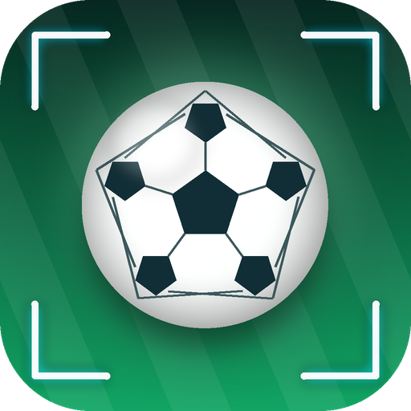

选择比赛
▶
加载更多…
集锦
—
›
0.5×
0.25×
0.125×
恢复画面
‹ 播放
设置
播放内容
集锦连播
原片
画面填充
完整
铺满
默认画面
恢复完整显示 + 全部集锦
集锦浮窗
集锦分类
筛选
尚未载入比赛
自动补时
前置补时
−
1.0s
+
秒
后置补时
−
2.0s
+
秒
自动跟焦
缩放倍率
1.00×
1.15×
1.25×
1.40×
1.60×
2.00×
竖屏分屏
焦点框
算法可视化
缓存上限
200M
600M
1G
2G
缓存占用
读取中…
清空
网络流量
读取中…
清零
只统计真实从 B 站下载的字节；命中本地缓存不产生流量。移动数据下播放页会高亮提示。
登录 Cookie
保存
软件更新
—
检查更新
从 GitHub Releases 检查并下载新版本
下载并安装

VCNC足球
VCNC football · 五人制足球沉浸场
分享这个应用
扫码下载最新版
把二维码截图或链接发给朋友，对方用手机扫一下就能安装。
一键分享
复制链接
下载最新版 APK
github.com/volcanochen/vcnc-football/releases/latest
›
VCNC 的 B 站空间
space.bilibili.com/432185343 · 看原始比赛录像
›
GitHub 项目主页
github.com/volcanochen/vcnc-football · 源码与文档
›
联系作者
问题反馈 · GitHub Issues
提 bug、提需求最容易被看到
›
B 站私信
点开空间主页 → 发消息
›
支持一下
微信扫码打赏
本应用免费、无广告、不收集个人信息。如果它让你看球更省心，可以请作者喝杯咖啡。
视频内容来自 B 站公开投稿，版权归原作者所有；本工具仅供个人学习研究。
列表
播放
设置
没能从分享里读到 B 站链接
解析
关闭
加载失败
重试